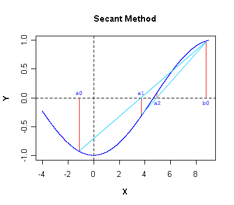
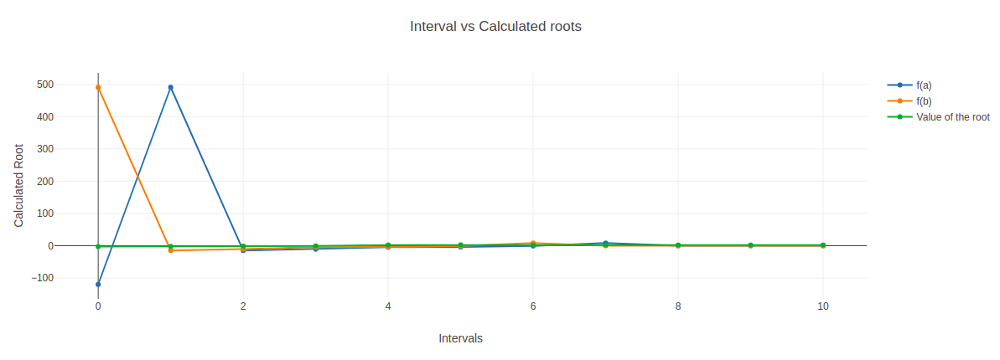

For finding the roots of linear, quadratic and third degree polynomial using Secant-Method
Secant method is also a recursive method for finding the roots of the polynomials by successive approximation. Similar to the Regular-falsi method but in this method we don't need to check for f(x1)*f(x2)< 0 after every approximation. In this method, the neighbourhood roots are approximated by secant line or chord to the function f(x). Advantage of this method is that we don't need to differentiate the given function f(x), as we do in Newton-raphson method.

As we know the line equation:
y-y1 = m(x-x1)
Here m is the slope.
Applying (x0, f(x0)) and (x1, f(x1))
Y - f(x1) = [f(x0)-f(x1)/(x0-x1)] (x-x1) ...eq(1)
As we're finding root of function f(x) so, Y=f(x)=0 in Equation (1) and the point where the secant line cut the x-axis is,
x= x1 - [(x0 - x1)/ (f(x0) - f(x1)]f(x1)
We use the above result for successive approximation for the root of function f(x). Let's say the first approximation is x=x2:
x2= x1 - [(x0 - x1)/ (f(x0)-f(x1))]f(x1)
Similarly, the second approximation would be x =x3:
x3= x2 - [(x1-x2)/ (f(x1)-f(x2))]f(x2)
And so on, till nth iteration,
xn+1= xn - [(xn-1 - xn) / (f(xn-1) - f(xn))]f(xn)
# Python program for implementation of Secant Method for algebraic equations
# Taking input of the intervals for the guess
a= int(input("Enter the interval a: "))
b= int(input("Enter the interval b: "))
# Function is defined here:
def secant(x):
return x**3-2*x-5
# Root of the function is calculated here..
for i in range(11):
x0,x1=a,b
fx0,fx1=secant(x0),secant(x1)
x2= (x0*secant(x1)-x1*secant(x0))/(secant(x1)-secant(x0))
a,b=x1,x2
# Root is displayed here.
print("Root of the given function is ",x2)
Take Observations from the method and tabulate it for the given intervals.
Plot a graph also. (function vs root).

Hence we findout the roots for the given polynomial.
Advantage of the Secant method is that the speed of convergence of is faster than that of Bisection and Regula falsi method.
It uses the two most recent approximations of root to find new approximations, instead of using only those approximations which bound the interval to enclose root.